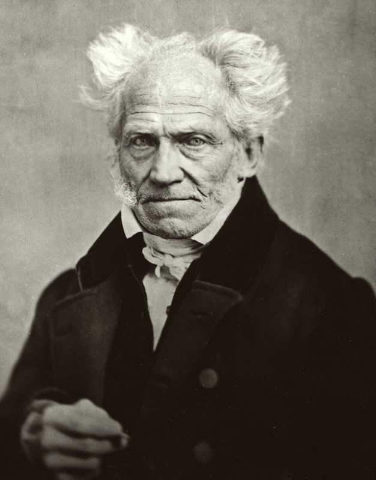

十九世纪德国哲学家，意志哲学的奠基人。他以"世界是我的表象"和"世界是我的意志"两句箴言为轴，把形而上学从理性的殿堂拉回生命的欲求之中——悲观、深刻、反体系，却在身后影响了尼采、瓦格纳、弗洛伊德与整个现代主义艺术。
叔本华哲学从"世界是表象"出发，穿过"世界是意志"的本体论洞见，最终落到悲观主义、审美静观与同情解脱。以下六个概念构成其思想骨架——点击卡片进入详细解读。
世界的本体不是理性，而是盲目的、永不止息的欲求冲动。意志是一切事物的内在本质，没有目的、没有终结、永远挣扎。
世界作为表象，是主体通过充足理由律（时空、因果、动机）所认识的现象世界。这是康德现象界的继承，也是意志的遮蔽面。
意志的本质是欲求，欲求源于匮乏，匮乏产生痛苦；欲求满足后是无聊。人生像钟摆，在痛苦与无聊之间来回摆动。
暂时摆脱意志的奴役，纯粹主体沉浸于对理念的观照。艺术——尤其是音乐——是意志的直接客体化，是通往解脱的最高途径。
道德的基础不是理性命令，而是对他人的痛苦的感同身受。同情源于对"意志同一性"的认识——一切生命本是同一个意志。
肯定意志即是痛苦，否定意志即是解脱。禁欲、同情、审美是三条否定意志之路——叔本华在这里与佛教和吠檀多相遇。
叔本华的著作不多，但一部主著贯穿一生。从1813年的博士论文到1851年让他成名的随笔集，他的思想在四十余年中缓慢地绽放。以下六部构成理解其哲学的主干——每部均含详细解读。
哲学主著。第一篇论表象、第二篇论意志、第三篇论艺术、第四篇论解脱——一个完整而悲观的体系。
认识论奠基之作。充足理由律有四种根源——生成、认识、存在、行为。全书体系的入口。
论文集。一篇论意志自由，一篇论道德的基础。提出"同情"作为唯一真实的道德动机。
两卷本随笔集。包含《人生的智慧》等名篇，让叔本华在晚年意外地收获了迟来的名声。
色彩理论的生理学尝试。从歌德的客观论色彩学出发，却走向主观的视觉生理学，后与歌德分歧。
把"意志"推广到自然界的自然科学证据——万有引力、磁力、生物本能，都是意志的显现。
先读《附录与补遗》中《人生的智慧》一章（有单行本）。这不是哲学体系的入口，却是最好的导游——叔本华用世俗的智慧谈幸福、孤独、财产与名声，你会先喜欢上这个人的言说方式，再进入他的体系。
打开《作为意志和表象的世界》，先读第一篇。理解主体与客体、充足理由律、现象世界——这是整个体系的舞台。同时读1813年的博士论文《论充足理由律的四重根》作辅助。
这是全书的心脏。身体作为意志的直接客体化、意志在自然界的阶梯式显现、意志与理智的关系——读完这一篇，悲观主义的形而上学基础已经完整。
第三篇谈审美静观与艺术等级，第四篇谈生命的否定与解脱。这两篇是叔本华对人类处境的回答——既有救赎的可能，又承认救赎的艰难。可与第四篇结合着读《论自然中的意志》。
读《伦理学的两个基本问题》理解同情伦理；回头对照康德《纯粹理性批判》理解叔本华改造了什么；再读佛教（四圣谛、八正道）与吠檀多哲学，看叔本华为何自称"站在东方哲学的源头"。
本站是为系统学习叔本华哲学而做的导读。内容以概念为骨架、以著作为血肉——概念页展开每个核心命题的定义、论证、实例与延伸思考；著作页逐部解读背景、核心论点、结构要点与关键段落；生平页还原一个在喧嚣时代独居法兰克福的老人；名言页提供直接感受其语言的入口。
叔本华常说：哲学不是让生活变容易，而是让我们理解生活为什么如此艰难。他一生与母亲决裂、与黑格尔对抗、与时代隔绝，晚年却以自嘲的方式获得迟来的名声。读懂他，不只是读懂一个悲观主义者，更是读懂一条从康德到尼采之间的隐秘通道。
本站所有引文若为概括性表述，均标注"意译"；术语翻译全书统一。后续将不断扩充内容——新增概念卡片将直接追加到概念页，无需改动其他页面。